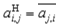
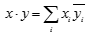
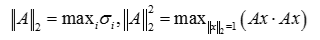

Intel® oneAPI Math Kernel Library Developer Reference - Fortran
Descriptions of LAPACK routines use the following notation:
AH |
For an M-by-N matrix A, denotes the conjugate transposed N-by-M matrix with elements: For a real-valued matrix, AH = AT. |
x·y |
The dot product of two vectors, defined as:  |
Ax = b |
A system of linear equations with an n-by-n matrix A = {aij}, a right-hand side vector b = {bi}, and an unknown vector x = {xi}. |
AX = B |
A set of systems with a common matrix A and multiple right-hand sides. The columns of B are individual right-hand sides, and the columns of X are the corresponding solutions. |
|x| |
the vector with elements |xi| (absolute values of xi). |
|A| |
the matrix with elements |aij| (absolute values of aij). |
||x||∞ = maxi|xi| |
The infinity-norm of the vector x. |
||A||∞ = maxiΣj|aij| |
The infinity-norm of the matrix A. |
||A||1 = maxjΣi|aij| |
The one-norm of the matrix A. ||A||1 = ||AT||∞ = ||AH||∞ |
||x||2 |
The 2-norm of the vector x: ||x||2 = (Σi|xi|2)1/2 = ||x||E (see the definition for Euclidean norm in this topic). |
||A||2 |
The 2-norm (or spectral norm) of the matrix A.  |
||A||E |
The Euclidean norm of the matrix A: ||A||E2 = ΣiΣj|aij|2. |
κ(A) = ||A||·||A-1|| |
The condition number of the matrix A. |
λi |
Eigenvalues of the matrix A (for the definition of eigenvalues, see Eigenvalue Problems). |
σi |
Singular values of the matrix A. They are equal to square roots of the eigenvalues of AHA. (For more information, see Singular Value Decomposition). |